File: 000930.gt.txt (if the image is defective, simply delete all Arabic text and the line will be excluded)
ويقال انه نجا لقمان بن عاد ، وعاش حتى عمر عمر سبعة نسور .
File: 000931.gt.txt (if the image is defective, simply delete all Arabic text and the line will be excluded)
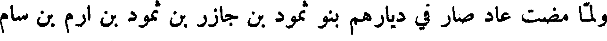
ولما مضت عاد صار في ديارهم بنو ثمود بن جازر بن ثمود بن ارم بن سام
File: 000932.gt.txt (if the image is defective, simply delete all Arabic text and the line will be excluded)
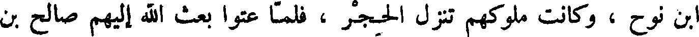
ابن نوح ، وكانت ملوكهم تنزل الحجر ، فلما عتوا بعث الله إليهم صالح بن
File: 000933.gt.txt (if the image is defective, simply delete all Arabic text and the line will be excluded)
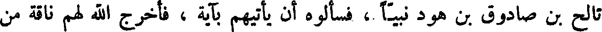
تالح بن صادوق بن هود نبيا ، فأسألوه أن يأتيهم بآية ، فأخرج الله لهم ناقة من
File: 000934.gt.txt (if the image is defective, simply delete all Arabic text and the line will be excluded)
الأرض معها فصيلها ، فقال لهم صالح : أن لهذه الناقة يوما ترد فيه الماء ، ولكم
File: 000935.gt.txt (if the image is defective, simply delete all Arabic text and the line will be excluded)
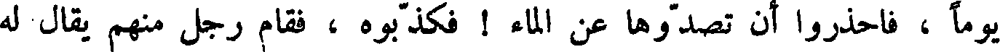
يوما ، فاحذروا أن تصدوها عن الماء ! فكذبوه ، فقام رجل منهم يقال له
File: 000936.gt.txt (if the image is defective, simply delete all Arabic text and the line will be excluded)
قدار ، فعقرها وضرب عرقوبها بالسيف ، فارتفع فصيلها على نشز من الأرض ،
File: 000937.gt.txt (if the image is defective, simply delete all Arabic text and the line will be excluded)
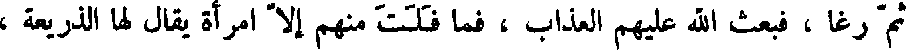
ثم رغا ، فبعث الله عليهم العذاب ، فما فلت منهم إلا امرأة يقال لها الذريعة ،
File: 000938.gt.txt (if the image is defective, simply delete all Arabic text and the line will be excluded)
وضرب العرب بقدار المثل .
File: 000939.gt.txt (if the image is defective, simply delete all Arabic text and the line will be excluded)
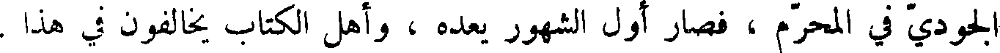
الجودي في المحرم ، فصار أول الشهور يعده ، وأهل الكتاب يخالفون في هذا .
File: 000940.gt.txt (if the image is defective, simply delete all Arabic text and the line will be excluded)
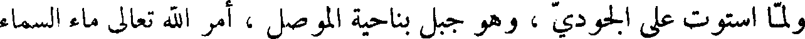
ولما استوت على الجودي ، وهو جبل بناحية الموصل ، أمر الله تعالى ماء السماء
File: 000941.gt.txt (if the image is defective, simply delete all Arabic text and the line will be excluded)
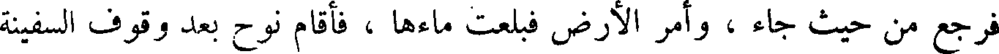
فرجع من حيث جاء ، وأمر الأرض فبلعت ماءها ، فأقام نوح بعد وقوف السفينة
File: 000942.gt.txt (if the image is defective, simply delete all Arabic text and the line will be excluded)
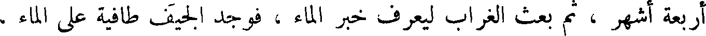
أربعة اشهر ثم بعث الغراب ليعرف خبر الماء فوجد الجيف طافية على الماء
File: 000943.gt.txt (if the image is defective, simply delete all Arabic text and the line will be excluded)
فوقع عليها ولم يرجع ، ثم أرسل الحمامة ، فجاءت بورقة زيتون ، فعلم أن الماء
File: 000944.gt.txt (if the image is defective, simply delete all Arabic text and the line will be excluded)
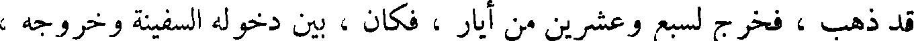
قد ذهب ، فخرج لسبع وعشرين ومن أيار ، فكا بين دخوله السفينة وخروجه ،
File: 000945.gt.txt (if the image is defective, simply delete all Arabic text and the line will be excluded)
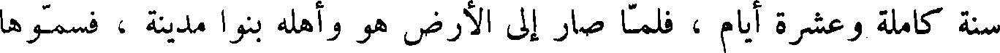
سنة كاملة وعشرة أيام ، فلما صار إلى الأرض هو وأهله بنوا مدينة ، فسموها
File: 000946.gt.txt (if the image is defective, simply delete all Arabic text and the line will be excluded)
ثمانين .
File: 000947.gt.txt (if the image is defective, simply delete all Arabic text and the line will be excluded)
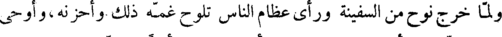
ولما خرج نوح من السفينة ورأى عظام الناس تلوح غمه ذلك وأحزنه،وأوحى
File: 000948.gt.txt (if the image is defective, simply delete all Arabic text and the line will be excluded)
الله إليه : إني لن أرسل الطوفان على الأرض بعدها أبدا . ولما خرج نوح من
File: 000949.gt.txt (if the image is defective, simply delete all Arabic text and the line will be excluded)
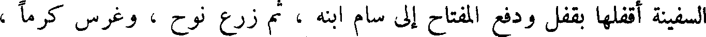
السفينة أقفلها بقفل ودفع المفتاح إلى سام ابنه ، ثم زرع نوح ، وغرس كرما ،
File: 000950.gt.txt (if the image is defective, simply delete all Arabic text and the line will be excluded)
وعمر الأرض .
File: 000951.gt.txt (if the image is defective, simply delete all Arabic text and the line will be excluded)
وان نوحا يوما لنائم إذ انكشف ثوبه ، فرأى حام ابنه سوأته ، فضحك ،
File: 000952.gt.txt (if the image is defective, simply delete all Arabic text and the line will be excluded)
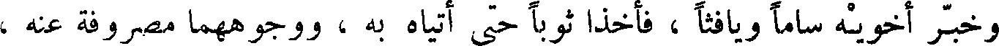
وخبر أخويه ساما ويافتا ، فأخذا ثوبا حتى أتياه به ، ووجوههما مصروفة عنه ،
File: 000953.gt.txt (if the image is defective, simply delete all Arabic text and the line will be excluded)
فألقياه الثوب عليه ، فلما انتبه نوح من نومه ، وعلم الخبر ، دعا على كنعان بن
File: 000954.gt.txt (if the image is defective, simply delete all Arabic text and the line will be excluded)
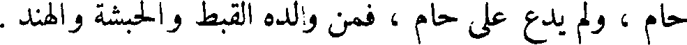
حام ، ولم يدع على حام ، فمن ولده القبط والحبشة والهند .
File: 000955.gt.txt (if the image is defective, simply delete all Arabic text and the line will be excluded)
وكان كنعان أول من رجع من ولد نوح إلى عمل بني قابيل ، فعمل الملاهي
File: 000956.gt.txt (if the image is defective, simply delete all Arabic text and the line will be excluded)
والغناء والمزامير والطبول والبرابط والصنوج ، أطاع الشيطان في اللعب والباطل .
File: 000957.gt.txt (if the image is defective, simply delete all Arabic text and the line will be excluded)
وقسم نوح الأرض بين ولده ، فجعل لسام وسط الأرض ، والحرم وما
File: 000958.gt.txt (if the image is defective, simply delete all Arabic text and the line will be excluded)
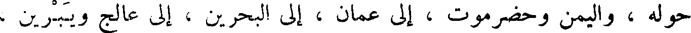
حوله ، واليمن وحضرموت ، إلى عمان ، إلى البحرين ، إلى عالج ويبرين ،
File: 000959.gt.txt (if the image is defective, simply delete all Arabic text and the line will be excluded)
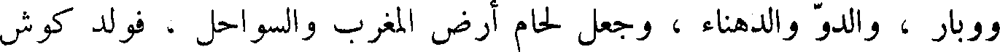
ووبار ، والدو والدهناء ، وجعل لحام أرض المغرب والسواحل ، فولد كوش
To Save: `Ctrl+s`, make sure to choose `Webpage, complete`!